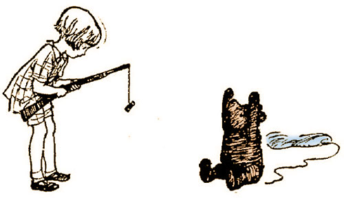
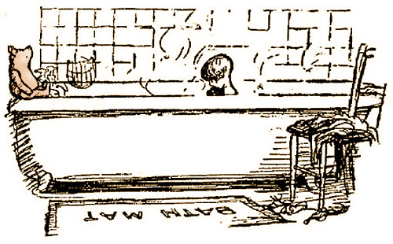

The bees were still buzzing as suspiciously as ever. Some of them, indeed, left their nests and flew all round the cloud as it began the second verse of this song, and one bee sat down on the nose of the cloud for a moment, and then got up again.
"Christopher—ow!—Robin," called out the cloud.
"Yes?"
"I have just been thinking, and I have come to a very important decision. These are the wrong sort of bees."
"Are they?"
"Quite the wrong sort. So I should think they would make the wrong sort of honey, shouldn't you?"
"Would they?"
"Yes. So I think I shall come down."
"How?" asked you.
Winnie-the-Pooh hadn't thought about this. If he let go of the string, he would fall—bump—and he didn't like the idea of that. So he thought for a long time, and then he said:
"Christopher Robin, you must shoot the balloon with your gun. Have you got your gun?"
"Of course I have," you said. "But if I do that, it will spoil the balloon," you said.
"But if you don't," said Pooh, "I shall have to let go, and that would spoil me."
When he put it like this, you saw how it was, and you aimed very carefully at the balloon, and fired.
"Ow!" said Pooh.
"Did I miss?" you asked.
"You didn't exactly miss," said Pooh, "but you missed the balloon."
"I'm so sorry," you said, and you fired again, and this time you hit the balloon, and the air came slowly out, and Winnie-the-Pooh floated down to the ground
But his arms were so stiff from holding on to the string of the balloon all that time that they stayed up straight in the air for more than a week, and whenever a fly came and settled on his nose he had to blow it off. And I think—but I am not sure—that that is why he was always called Pooh.
"Is that the end of the story?" asked Christopher Robin.
"That's the end of that one. There are others."
"About Pooh and Me?"
"And Piglet and Rabbit and all of you. Don't you remember?"
"I do remember, and then when I try to remember, I forget."
"That day when Pooh and Piglet tried to catch the Heffalump——"
"They didn't catch it, did they?"
"No."
"Pooh couldn't, because he hasn't any brain. Did I catch it?"
"Well, that comes into the story."
Christopher Robin nodded.
"I do remember," he said, "only Pooh doesn't very well, so that's why he likes having it told to him again. Because then it's a real story and not just a remembering."
"That's just how I feel," I said.
Christopher Robin gave a deep sigh, picked his Bear up by the leg, and walked off to the door, trailing Pooh behind him. At the door he turned and said, "Coming to see me have my bath?"
"I might," I said.
"I didn't hurt him when I shot him, did I?"
"Not a bit."
He nodded and went out, and in a moment I heard Winnie-the-Pooh—bump, bump, bump—going up the stairs behind him.